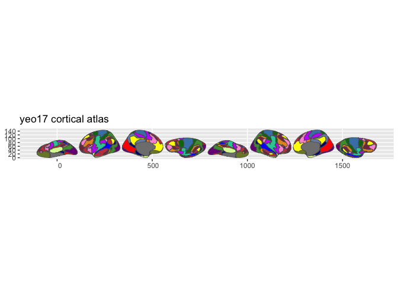

Yeo 2011 Atlas for the ggsegverse Ecosystem.
Installation
# From r-universe
install.packages("ggsegYeo2011", repos = "https://ggsegverse.r-universe.dev")
# From GitHub
# install.packages("remotes")
remotes::install_github("ggsegverse/ggsegYeo2011")Atlases
yeo17
Yeo 2011 17-network resting-state parcellation.

## Data sourceBuilt-in FreeSurfer annotations from fsaverage5.
- Reference: Yeo et al. (2011) doi:10.1152/jn.00338.2011
- Date obtained: 2020-03-26